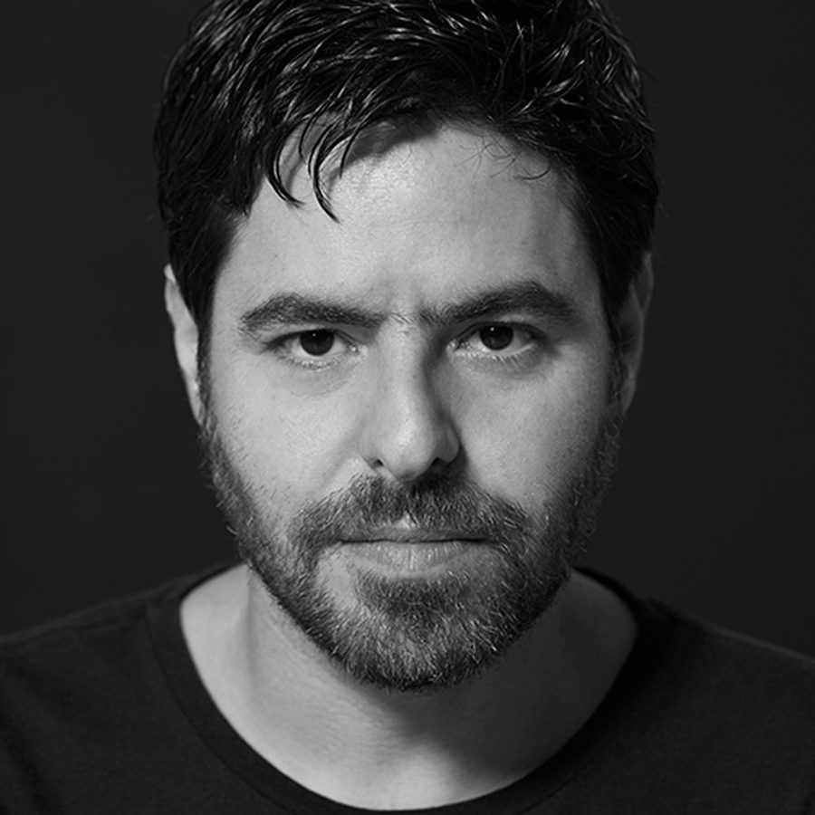

Gui Boratto: “This movement in house music makes a lot of sense, and it’s exciting”


Gui Boratto: “This movement in house music makes a lot of sense, and it’s exciting”
Long before the runaway success of his seminal debut album ‘Chromophobia’ on Kompakt Records in 2007, Brazil’s Gui Boratto was involved in creating music, though in a very different capacity; as an audio engineer, multi-instrumentalist and composer who worked in the advertising sector from the early 90s onwards. However, it’s this exact history that undoubtedly fed into his career in electronic and club music, which he initiated a decade ago to much success.
As Boratto tells Data Transmission, while much of the club music that we listen might see the artist working on the textures first as producers, working as a composer alternatively means the the melodies and harmonies come first; followed then by the electronic production.
It’s this role as a composer that Boratto has returned to on his fourth album ‘Abaporu’, which he says reflects the same creative process that informed his debut. And neatly, it also fits in with a wider movement we’re currently seeing in underground house, which has seen influential acts like Ten Walls and Tale of Us embrace a return to melodies that have a real sense of grandeur.
Boratto calls this a “movement”. And for a DJ/producer who’s always been known for his sophisticated grasp of melodies and harmonies, it’s one for which he’s the perfect fit. With his new album ‘Abaporu’ out now, Data Transmission spoke to Boratto to get the full story.
What was the working process behind the album, and when did you decide that you wanted to return to the format of a long player?
I was releasing albums every two years, and that was the general timeframe. I really cannot produce anything on the road. I’m a little old school and I need the different instruments and keyboards. I know lots of friends of mine, they can really produce something on a flight, but that’s not the case with me. So in-between these endless tours, in the past year I co-produced two albums. One was Mixhell, a project from an ex-Sepultura member and his wife, and that was released through Boys Noize records. The other was for a Brazillian duo Elekfantz that I released on my label D.O.C.
In-between those there were some singles and some remixes. When I sat down to do this fourth album, the process was very similar to the other albums. I spent most of the time during the day here in my home studio, basically programming and recording different instruments. Because of the different things I’ve been involved with over the past few years, the whole process took one year more, three years instead of two but it was great because during this time I was collecting references, and it ended up taking a cycle of seven or eight years to be in the same mood as ‘Chromophobia’. What I would say about ‘Abaporu’ is that not only is it similar to ‘Chromophobia’ but I think it’s also my happier album. Especially compared to my third album, which was very rock n’ roll and introspective, while this one is very colourful, it’s not really a techno album.
It’s a very melodic album, for sure.
You have a bit of this, a bit of that. A few vocal songs, and many different atmospheres. I think it’s my most complete album as a producer. I did many different things. I even produced a little bit of the album in my house in the fields, which is in the middle of the forest. It was just me, my wife and my daughter in the middle of nowhere with lots of trees. The process was very similar, but the environment was different. And then one of my main studios is in São Paulo. It’s good to be able to compose in a different environment, in a forest and a quiet place.
You compare your new album to ‘Chromophobia’, and that’s the comparison being drawn elsewhere too. What are the main parallels for you personally?
I would say that with ‘Chromophobia’, because it was my first album it was my ‘naïve’ album, let’s say. The wider sound at that point was very different to what was on ‘Chromophobia’, so it was like the ugly duckling. Then ‘Take My Breathe Away’ was kind of a continuation of that, not that I tried to copy ‘Chromophobia’, it was just very natural. On the third album I could experiment my more rock n’ roll side, which was why it sounded very particular, and different compared to the first two. And after eight years, I’m in the same mood again. I’m not trying to say that on the third album, I was sad or introspective, I just tried to follow that path and explore those more aggressive elements, distorted synthesizers and such. And then I was so light and happy in a way, I was composing a lot, and it’s different when you’re composing a song, as the production comes second. When you’re dealing with textures, the production comes first as you’re dealing on a one-note base, the harmonies are much simpler. When you’re working with a real composition, and working with melodies and harmonies, it’s a different approach. This is an album with a lot of compositions, of lots of songs and not tracks.
The album’s title and cover art is a reference to a famous modernist painting from the 20th century from Tarsilo Do Amaral, a Brazillian artist who drew on European modernist conventions in her paintings. I know it is reference from you to the process of cultural reappropriation. You’ve given the original painting a new twist.
Imagine that almost a century ago when that was painted, it was almost impossible to cross the ocean, to go to Europe and leave, to get to know the other artists and painters who have a totally different way of life. Nowadays it’s really easy, because of the internet and the whole process of globalisation. There are so many different things going on that you must have a filter. In my case, I wasn’t necessarily taking references from only music, but also from art, architecture, people, everything that we live amongst, that is always reflected on music or any kind of creative expression. The Brazilian modern art movement was iconic from the 1920s through to the 1950s, this period was so important and I was working from the same creative process, so it made sense to do pay homage to this period. The artwork would reflect the content inside.
One of the defining aspects of ‘Abaporu’ is how much stronger the melodic aspects are. That’s also one of the real trends we’re seeing in house music at the moment, from acts like Ten Walls and Tale of Us, to what we’re hearing from labels like Innervisions, it’s a return to the melodic stuff with a real sense of grandeur. Have you noticed this?
Yes! And I thank God that I’m able to start listening to this kind of music again. We had that in the glorious 80s and the early 90s, where there was nothing too specific and techno was the universal language. And then it started to be so specific, you had specific tribes that only listened to progressive house, the trance guys and the drum n’ bass guys, the techno guys. It was so separate. Now that these melodies are finally back, we can have an indie audience back. You can even see this at indie festivals, at Lowlands Festival in the Netherlands a few weeks ago it was nice to see all these different artists, Portishead and Queens of the Stone Age and Skrillex, the audience was so mixed and those who were watching Queens of the Stone Age were also wandering over to see me play. Now we’re taking back these melodies.
When you have a melody in a techno song, the range of your audience will increase for sure. The top selling artist albums in music history were vocal albums, much more than instrumental ones. But I’m not talking about vocal songs in house music, I’m talking about the melodies in these records. People can sing these melodies in their minds, even when they’re only instrumental.
I guess it’s timely that you’re putting out an album like ‘Abaporu’, because it connects with this development a little bit.
It’s great when you see clearly lots of different producers, and then they start to think in the same way without even necessarily speaking with each other, or any big deal. And then you have a little movement. When you notice that there are some people out there thinking in the same way, it’s really nice. It’s very exciting, and it makes a lot of sense.
Words: Angus Thomas Patterson